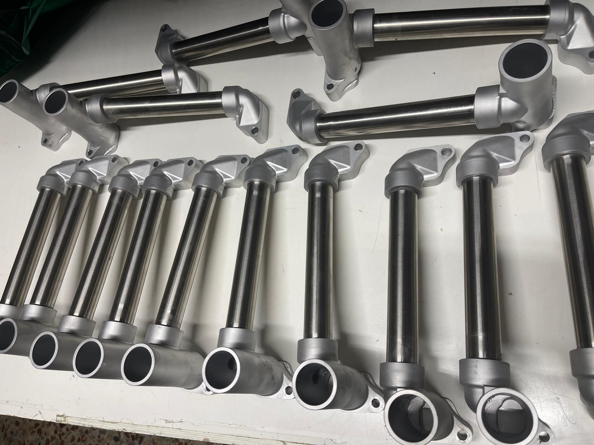

Technisches Archiv fuer Oldtimer
Oldtimer Ersatzteile. Heute gefertigt, fuer die Zeit gebaut.
Handwerkliche Reproduktionen und seltene Komponenten fuer Fiat, Lancia, Autobianchi, Alfa Romeo und andere historische Fahrzeuge.
150+Teile im Archiv
4Hauptmarken
WASchnelle Anfrage
Marken
Fiat Topolino, Balilla, Lancia Fulvia, Autobianchi Bianchina und weitere Modelle.
Der Katalog ist nach Marke, Modell, Jahr, Kategorie und Verfuegbarkeit gegliedert.
Anfertigung auf Anfrage
Sie finden das Teil nicht? Wir koennen es reproduzieren.
Die Produktion kann mit Muster, Foto, technischer Zeichnung oder verschlissenem Originalteil starten.
Ueber uns
Eine Werkstatt aus echter Restaurierungserfahrung.
Marco Bertoli fertigt schwer auffindbare Ersatzteile mit Augenmerk auf mechanische Praezision, passende Materialien und korrekte historische Details.
Kontakt
Verfuegbarkeit oder Angebot anfragen.
Werkstatt
Via Industriale 25, 25065 Lumezzane, Brescia, Italien